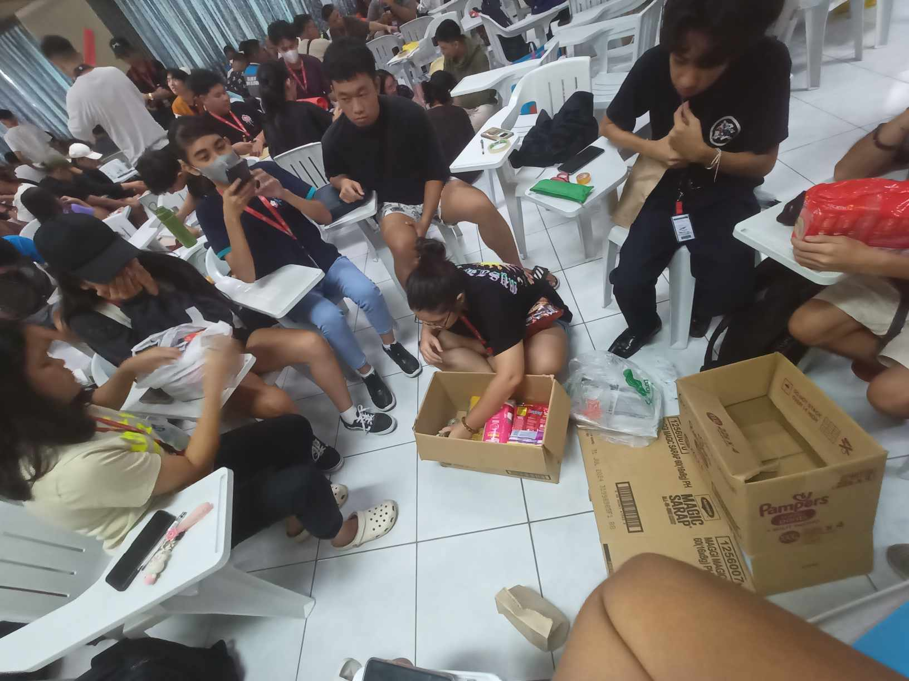
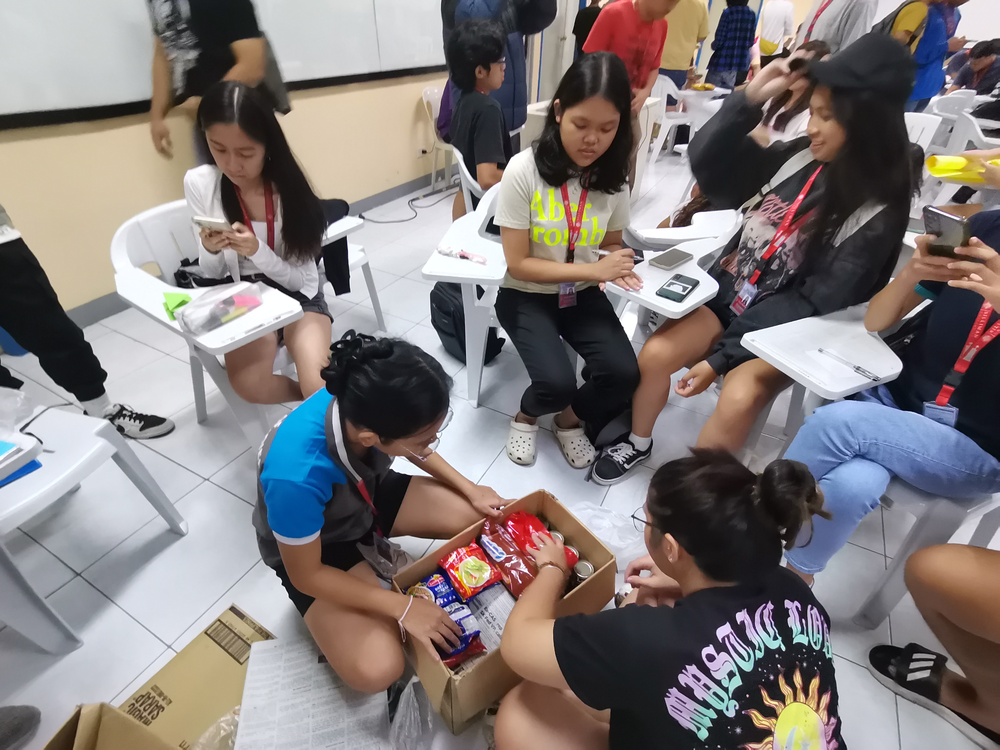

Activity Name:
STO. NIÑO WHITE GIFT WRAPPING
Category:
Community
Organizer:
STO. NIÑO ORPHANAGE
Date of Event:
The SU Experience of Ernest Rojo
Activity Name:
Category:
Organizer:
Date of Event:
Sto. Niño White Gift Wrapping was a heartfelt activity undertaken during GE10A, involving groups from the Ambassador Tour. The purpose was to prepare and wrap gifts intended for the children of Sto. Niño Orphanage, ensuring they received thoughtful presents for Christmas. Alongside the gifts, short letters were written to add a personal touch to the gesture. The collaborative effort aimed to bring joy to the children and create a positive impact during the holiday season.
Participating in the Sto. Niño White Gift Wrapping activity was a meaningful experience, as it involved creating gifts and personalized letters for children in need. The act of preparing presents for the orphanage underscored the importance of spreading joy and kindness, especially during festive occasions. The hope that the gifts would bring happiness to the children served as a reminder of the positive impact small gestures can have on the lives of others.
The experience of contributing to Sto. Niño White Gift Wrapping has left a lasting impression, emphasizing the significance of acts of kindness and generosity. Moving forward, I am inspired to continue engaging in activities that bring joy and support to those in need. The hope is to contribute positively to the well-being of others, recognizing the importance of compassion and goodwill in creating a better community.
Because of Sto. Niño White Gift Wrapping, I am inspired to continue participating in activities that spread joy and kindness to those in need. The experience has reinforced the importance of small gestures in making a positive impact on the lives of others, particularly during special occasions. Moving forward, I am committed to fostering a spirit of generosity and compassion, contributing to the well-being of communities in meaningful ways.
Note: Photos may be blurry or unclear prior to October 9, 2023 due to hardware issues

